Reconstructing environments
perspectives from the past for the present
Graham H. Edwards

Eco-Allies
27 March 2026
Paleoclimate
Reconstructing climates of the past
Earth
2002

Earth
21 000 years ago

Earth
105 million years ago

Earth
690 million years ago

Earth (& Sun)
4,565 million years ago
Global temperature over the last 485 million years

How do we figure this out?
(Isotope) Geochemistry
Isotopes
Atoms of the same element with different masses.
| particle | charge |
|---|---|
| proton | + |
| electron | − |
| neutron | ○ |
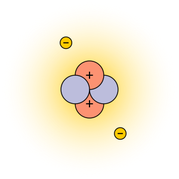
$$^4_2\text{He}$$Isotopes
$$^3_2\text{He}$$
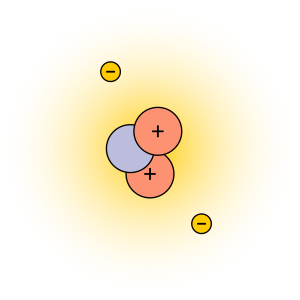
$$^4_2\text{He}$$
Isotope fractionation records information!
| Type | Fractionates by... |
|---|---|
| Radiogenic | Radioactive decay |
| Stable | Environmental conditions |
Measuring time
Radioactive Decay
$$\frac{dN}{dt} = -\lambda N$$
$$N = N_o e^{-\lambda t}$$
$$n = N(e^{\lambda t} -1)$$
Half-lives and decay constants
\[\begin{aligned} t_{1/2} &= \frac{ln(2)}{\lambda} \\\\ \lambda &= \frac{ln(2)}{t_{1/2}}\end{aligned}\]
Radioactive Decay
Uranium-238
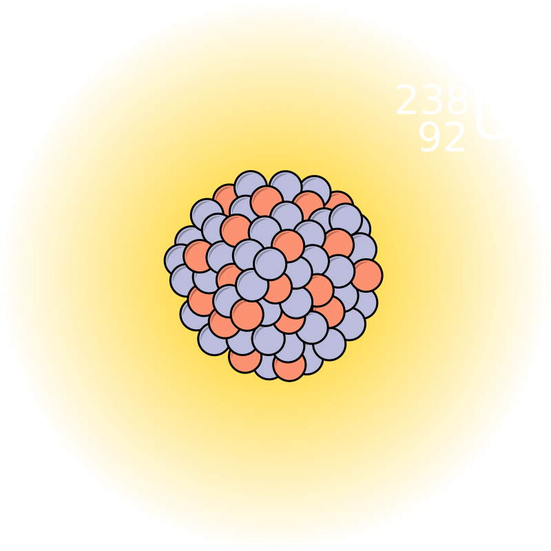
The uranium decay series
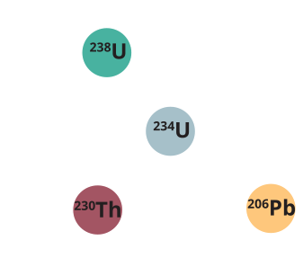
Uranium-lead (U-Pb) and uranium-series chronometers
Mass spectrometry
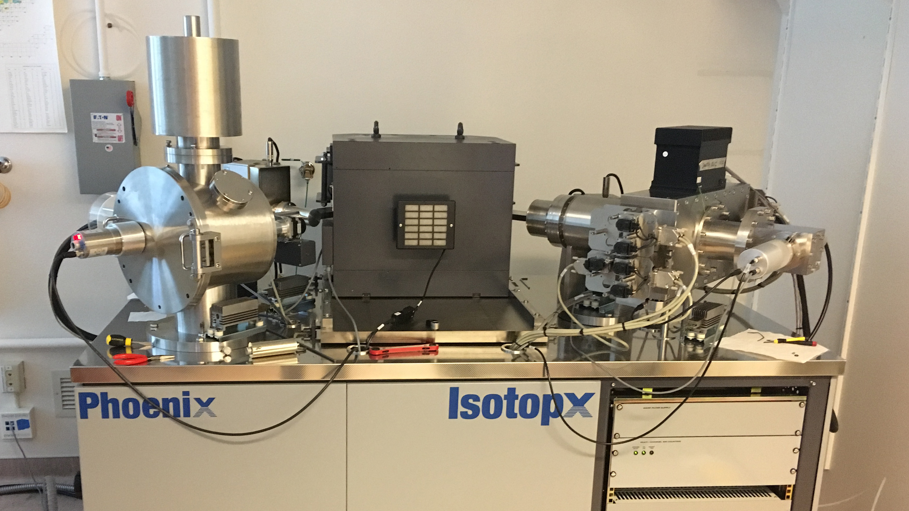
X62 thermal ionization mass spectrometer — Keck Isotope Facility, University of California Santa Cruz
Pretty rad, right?
How did we figure out all of this in the first place?

Maria Salomea Skłodowska-Curie
(image credit: Smithsonian)
Nuclear research & development in the U.S.A.


My academic lineage

Mark Ingrham
University of Chicago

George Wetherill
Carnegie Institution of Washington

Randy Van Schmus
The University of Kansas

Samuel Bowring
Massachusetts Institute of Technology

Terrence Blackburn
University of California Santa Cruz

Graham Edwards
Trinity University
Foundational isotope geochemists, Manhattan Project scientists
Mark Ingrham

Clair Patterson
Image credits: U. Chicago, Caltech
A long, worrisome complicity of science in war
Measuring climate of the past
Isotopes of oxygen (in water)
$\text{H}_2\text{O}$

Isotopes of oxygen (in water)
$^{16}\text{O}$
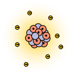
99.76%
$^{17}\text{O}$
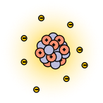
0.04%
$^{18}\text{O}$
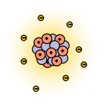
0.2%
Isotopes of oxygen (in water)
$$\frac{^{18}\text{O}}{^{16}\text{O}} = 0.00200520 \pm 0.00000045 $$VSMOW — Vienna Standard Mean Ocean Water
Isotopes of oxygen (in water)
$$\delta^{18}\text{O} = 1000\times \left(\frac{\frac{^{18}\text{O}}{^{16}\text{O}}_{sample}}{\frac{^{18}\text{O}}{^{16}\text{O}}_{standard}}-1\right)$$delta oxygen eighteen=
dell-oh eighteen
$$\delta^{18}\text{O} \propto \frac{^{18}\text{O}}{^{16}\text{O}}$$
Evaporation & precipitation → fractionation
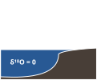
What happens to oxygen isotopes when they evaporate?
Evaporation & precipitation → fractionation
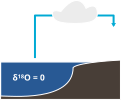
What happens to the ocean?
Oceans & ice sheets
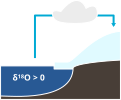
Oceans & ice sheets
- ↑ ice → ↑ δ18O
- ↓ ice → ↓ δ18O
Reconstructing ocean $\delta$18O
Shells form in seawater

Prof. Cait Livsey


{kind=link}
.png){kind=link}
.png){kind=link}
.png){kind=link}
{kind=link}
{kind=link}
{kind=link}
{kind=link}
Deep sea (benthic) $\delta$18O over the last 2.5 million years
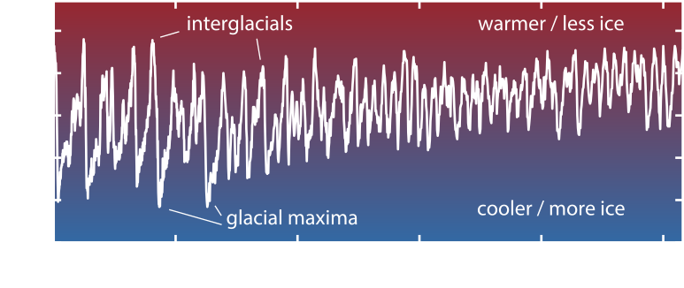
Precipitation across landscapes

My science spans two broad categories…

Quaternary climate

Isotope geochemistry

Cosmochemistry
Reconstructing ice sheet responses to climate change

IPCC, AR6, WG1, Fig. 9.17
Laurentide Ice Sheet

(ca. 25,000 years ago)
Reconstructions of Laurentide Ice Sheet (de)glaciation to better understand ice sheet life cycles
Baffin Island


The importance of ice streams
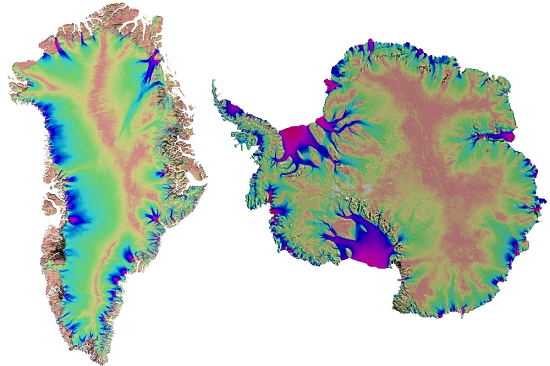
Laurentide ice streams

Heinrich events
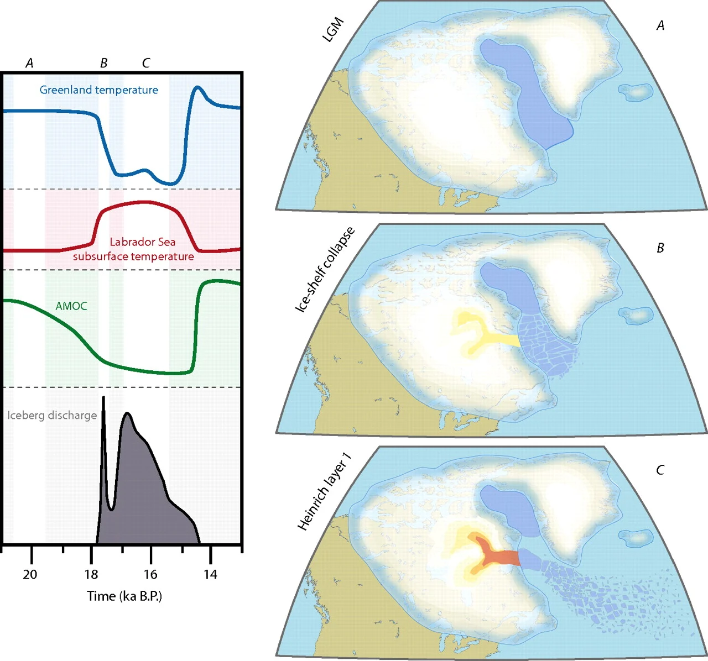
Isotope geochemistry!
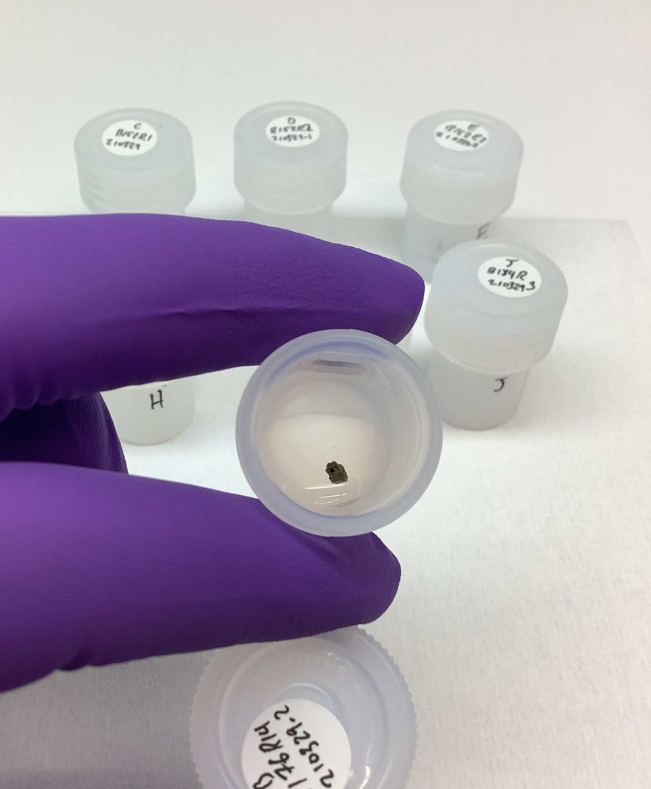
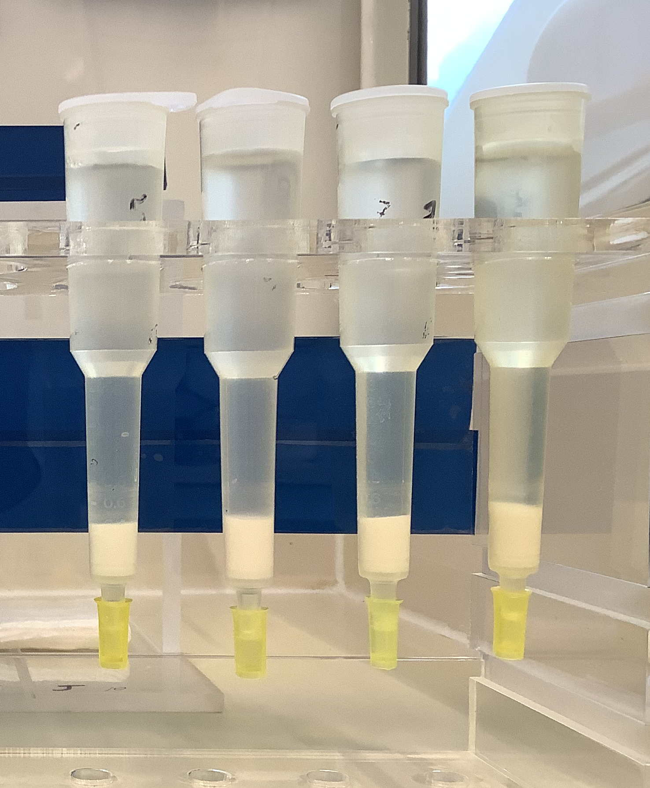
Baffin/Heinrich timescales
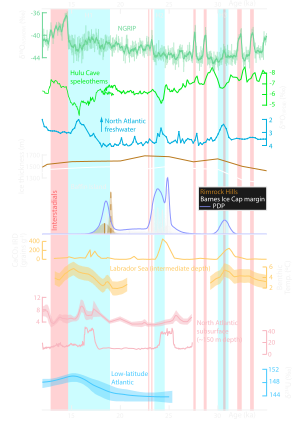
Subglacial records of ice sheet response to millenial-scale climate change

Atmosphere-ocean interactions
↓ Subglacial ↓ system ↓
Ice stream acceleration (ice sheet mass loss)
Sensitivity of subglacial systems
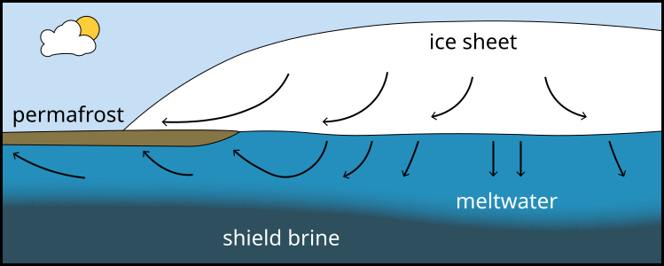
Adapted form Clark+ 2000, Lemieux+ 2008
Proglacial environments, including lakes & wetlands, are emergent, dynamic environments of the modern warming climate.

Glacial Lake Hitchcock (GLH)

Dalton+2023, Ridge+2012, McGann+2024, Springston+2024
Connecticut River Valley

G.H. Edwards
Carbonate concretions / claybabies


Thanks to Sophie Shipman for polishing cross-section surfaces.
Carbonate concretions / claybabies
Non-displacive, formed through oxidation of organic carbon Wu+2021

Reconstructing the hydrochemistry of the GLH proglacial lacustrine system.
Reconstructing the hydrochemistry of the GLH proglacial lacustrine system.

Field transect of the former GLH basin

Carbonate concretions
Bulk sediment
Sediment cores

Stable isotopes
Stable isotopes
Carbonate — concretions & ostracod valves
{kind=link}

Stable isotopes
Carbonate — concretions & ostracod valves
↓T → ↓ δ18O

Stable isotopes
Carbonate — concretions & ostracod valves
- Modern precipitation: -7 ≤ δ18O ≤ -10 ‰ Terzer-Wassmuth+2021
- Similar δ18O for SN ostracods and concretions Danhof 2025
- Concretion-forming waters ≈ lakewater
- S→N transect of ↓δ18O (MVR, MB, WR)
- Proximity to ice sheet margin?
Trace elements
Li, Na, Mg, Ca, Mn, Fe, Co, Ni, Cu, Zn, Sr, Ba, Pb, Th, U

Elevated Mn

Elevated Mn
Redox
- Reducing conditions → high-Mn carbonate Wittkop+2020
- Fe-Mn oxide formation Dean+1981
- Reducing conditions → Mn2+
- Oxidizing conditions → MnO2
Several reduction/oxidation cycles
↑ Mn → ↓ δ13C

Emerging story
- Concretions form shortly after sediment deposition
- Spatiotemporal variability → environmental diversity
- Local/near-shore processes dominate record
- Complex biogeochemistry!
Acknowledgements
Gavin Piccione, Rose Garrett, Luke Moreton, Sophie Shipman, Jack Ridge, Al Werner, Dave Jones, Clara Danhof, and assorted (NE) Friends of the Pleistocene.Thank you!
Appendix
North American Varve Chronology
- Precisely calibrated varve chronology of GLH, spanning 18.2–12.5 ka.
- Well-established Laurentide Ice Sheet retreat and GLH residence Antevs 1922, Stone+2025
- Lacustrine environment less well-described.

Ridge et al (2012), https://varves.as.tufts.edu/